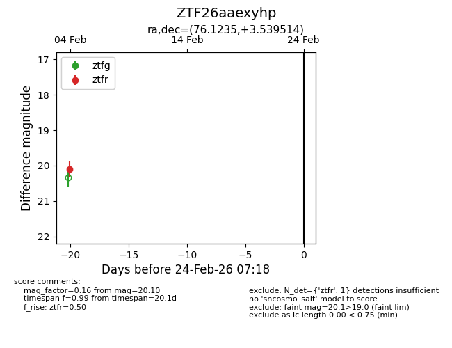
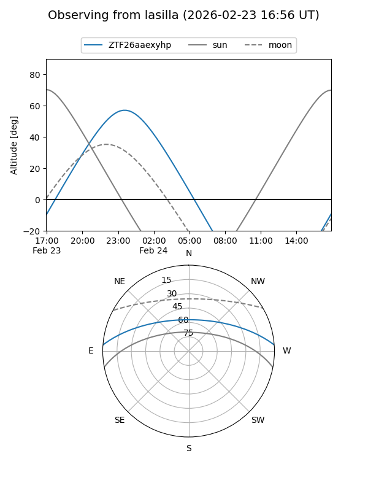
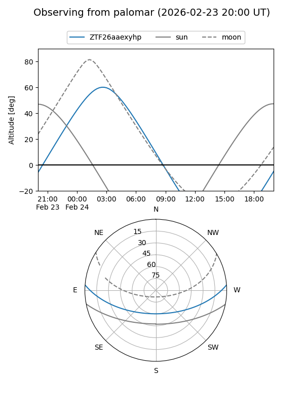

ZTF26aaexyhp
Target ZTF26aaexyhp at 2026-02-24 09:08
Aliases and brokers:
FINK: link
Lasair: link
ALeRCE: link
alt names
ZTF26aaexyhp (ztf,fink_ztf)
Coordinates:
equatorial (ra, dec) = 76.1235,+3.53951
equatorial (HMS+DMS) = 05:04:29.65,+03:32:22.25
galactic (l, b) = (196.6893,-21.80646)
Flags:
Photometry:
last ztfr=20.10
1 ztfr detections
Lightcurve

Visibility


Additional plots